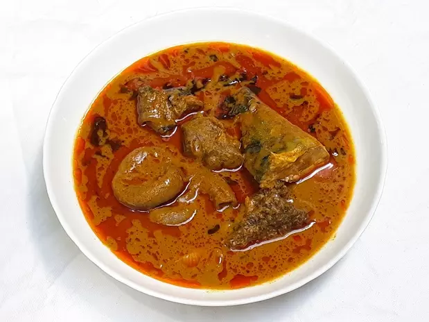

Palm Kernel Stew

A Plate of Palm Kernel Stew
Palm Kernel Stew is served with rice but you could you could also use eba, it is really
delicious.
The palm fruit oil extract extracted at low temperature.
Ingredients
- 1 kg Palm Fruits
- Beef
- Dry Fish
- Vegetable: Scent Leaves
- 2 medium onions
- 2 tablespoons ground crayfish
- Salt and Chili Pepper
- Iru
- 1 table spoon of curry powder
- 1-2 big stock cubes
- Extract the palm fruit concentrate, cook the beef and dry fish with 1 bulb of dried onion and stock cubes
till done.
- Cut the remaining bulb of onion. Pound the crayfish, ogiri okpei and pepper in a mortar and set aside. You
can also grind them with a dry a mill
- When the beef and fish are well done, add the palm fruit concentrate and add water to get the consistency
you like for your stews. Leave to boil very well.
Add the onions, crayfish, pepper and ogiri blend
and let it boil very well.